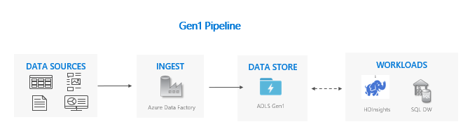

Dual Pipeline Pattern Guide: A quick start template #
Overview #
The purpose of this document is to provide a manual for the use of Dual pipeline pattern for migration of data from Gen1 to Gen2. This provides the directions, references and approach how to set up the Dual pipeline, do migration of existing data from Gen1 to Gen2 and set up the workloads to run at Gen2 endpoint.
Considerations for using the dual pipeline pattern:
- Gen1 and Gen2 pipelines run side-by-side.
- Supports zero downtime.
- Ideal in situations where your workloads and applications can’t afford any downtime, and you can ingest into both storage accounts.
Prerequisites #
-
Active Azure Subscription
-
Azure Data Lake Storage Gen1
-
Azure Data Lake Storage Gen2. For more details please refer to create azure storage account
-
Azure Key Vault. Required keys and secrets to be configured here.
-
Service principal with read, write and execute permission to the resource group, key vault, data lake store Gen1 and data lake store Gen2. To learn more, see create service principal account and to provide SPN access to Gen1 refer to SPN access to Gen1
Data pipeline set up for Gen1 and Gen2 #
As part of this pattern, Gen1 and Gen2 pipelines will run side by side.
Below is the sample pipeline set up for Gen1 and Gen2 using Azure Databricks for data ingestion, HDInsight for data processing and Azure SQL DW for storing the processed data for analytics.

Prerequisite
-
Create HDInsight cluster for Gen1. Refer here for more details.
-
Create HDInsight cluster for Gen2. Refer here for more details.
-
Create user assigned managed identity. Refer here to know more.
-
Permission should be set up for the managed identity for Gen2 storage account. Refer here for more details.
-
Additional blob storage should be created for Gen1 to support HDInsight linked service in ADF. Refer here for more details.
Note: To set up the data pipeline in ADF, two separate HDInsight clusters should be created each for Gen1 and Gen2.
Here ADF is used for orchestrating data-processing pipelines supporting data ingestion, copying data from and to different storage types (Gen1 and Gen2) in azure, loading the processed data to datawarehouse and executing transformation logic.
Creation of linked service for Gen1 and Gen2 in ADF #
As part of this pipeline set up, below linked services needs to be created as first step in ADF:
Go to ADF –> Manage –> Linked service –> Click on + New
-
Create ADB linked service.
-
Create HDInsight linked service.
-
Create Stored procedure linked service.
How to create HDInsight linked service for Gen1(Blob storage)
-
Go to Linked Services –> click on + New –> New linked service –> Compute –> Azure HDInsight –> Continue
-
Provide the details from Azure subscription with respect to each field and choose Blob Storage under Azure Storage linked service
-
Provide the user name and password details.
-
Click on Create button.
How to create HDInsight linked service for Gen2
-
Go to Linked Services –> click on + New –> New linked service –> Compute –> Azure HDInsight –> Continue
-
Provide the details from Azure subscription with respect to each field and choose ADLS Gen 2 under Azure Storage linked service
-
Provide the storage container name in the File system field. Give the user name and password.
-
Click on Create button.
How to set up Gen1 data pipeline #
Create a master pipeline in ADF for Gen1 and invoke all activities listed below:
-
Raw data ingestion using ADB script
Create a pipeline for data ingestion process using ADB activity. Refer here for more details.
Mount path configured to Gen1 endpoint
-
Data processing using HDInsight
Create a pipeline for data processing using HDInsight activity. Refer here for more details.
Mount path configured to Gen1 endpoint
Sample input path: adl://gen1storage.azuredatalakestore.net/AdventureWorks/Raw/FactFinance/
Sample output path: adl://gen1storage.azuredatalakestore.net/AdventureWorks/ProcessedHDI/FactFinance/
-
Loading to Azure synapse analytics (SQL DW) using stored procedure
Create a pipeline using Stored Procedure Activity to invoke a stored procedure in Azure SQL data warehouse.
Stored procedure Settings:
How to set up Gen2 data pipeline #
Create a master pipeline in ADF for Gen2 invoking all activities as listed below:
-
Raw data ingestion using ADB script
Create a pipeline for data ingestion process using ADB activity. Refer here for more details.
Mount path configured to Gen2 endpoint
-
Data processing using HDInsight
Create a pipeline for data processing using HDInsight activity. Refer here for more details.
Mount path configured to Gen2 endpoint
Sample input path: abfs://gen2storage@g2hdistorage.dfs.core.windows.net/AdventureWorks/Raw/FactInternetSales/
Sample output path: abfs://gen2storage@g2hdistorage.dfs.core.windows.net/AdventureWorks/ProcessedHDI/FactInternetSales/
-
Loading to Azure synapse analytics (SQL DW) using stored procedure
Create a pipeline for loading the processed data to SQL DW using stored procedure activity.
Stored procedure Settings:
Stored procedures created to load processed data to main tables:
External Table structure in SQL DW:
Steps to be followed #
This section will talk about the approach and steps to move ahead with this pattern once the data pipelines are set up for both Gen1 and Gen2.
Migrate data from Gen1 to Gen2 #
To migrate the existing data from Gen1 to Gen2, please refer to lift and shift pattern.
Data ingestion to Gen1 and Gen2 #
This step will ingest new data to both Gen1 and Gen2.
-
Create a pipeline in ADF to execute both data ingestion acitvity for Gen1 and Gen2.
Setting of the Base parameter:
-
Check the storage path at Gen1 and Gen2 end points. New data should be ingested simultaneously at both paths.
Run workloads at Gen2 #
This step make sure that the workloads are run at Gen2 endpoint only.
-
Create a pipeline in ADF to execute the workloads for Gen2. Run the pipeline.
-
Check the Gen2 storage path for the new files. The SQL DW should be loading with new processed data.
Cutover from Gen1 to Gen2 #
After you’re confident that your applications and workloads are stable on Gen2, you can begin using Gen2 to satisfy your business scenarios. Turn off any remaining pipelines that are running on Gen1 and decommission your Gen1 account.